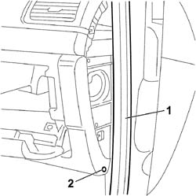
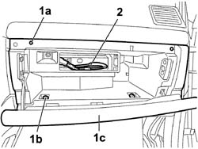
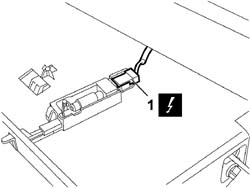
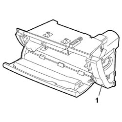

Procedures › 70 FITTINGS › 7040 BODY INTERIOR FITTINGS AND TRIM › 7040A PASSENGER COMPARTMENT TRIMS › 7040A31 DASHBOARD COMPARTMENT ASSEMBLY - R.R. 7040A31 DASHBOARD COMPARTMENT ASSEMBLY - R.R.
Path Procedures > 70 FITTINGS > 7040 BODY INTERIOR FITTINGS AND TRIM > 7040A PASSENGER COMPARTMENT TRIMS > 7040A31 DASHBOARD COMPARTMENT ASSEMBLY - R.R.
Kind repair procedure (removal / refitting; the operation number is the code)
Applies to all engines; all production periods
Interactive page https://sloeber94.github.io/elrnDB-fCrm/en/#/194001017
Applies to: all engines; all production periods
Before working on the passenger Air Bag disabling switch, carry out the following preliminary operations:
- Turn the ignition key to the OFF position and extract it.
- Disconnect the negative and positive battery terminals.
Op. 7040A45 RIGHT DASHBOARD SIDE TRIM - R.R.
Op. 5570T85 CD/AUDIO PLAYER LOADER - R R
1. Partly release the door housing seal by the compartment.
2. Undo the retaining bolt.

Applies to: all engines; all production periods
1. Undo the fixing bolts (1a) and (1b) and partly detach the compartment (1c) from the dashboard.
2. Release the wiring for the CD-Audio player/changer.

Applies to: all engines; all production periods
1. Disconnect the electrical connection from the compartment courtesy light.

Applies to: all engines; all production periods
1. Remove the compartment assembly from the dashboard.

Applies to: all engines; all production periods
- Check that the compartment assembly is not damaged.
- Place the compartment assembly in position in the dashboard.
- Fit the wiring for the CD-Audio player/changer.
- Connect the electrical connection for the courtesy light.
- Check that the compartment is correctly positioned and tighten the fixing bolts.
- Fit the door housing seal by the compartment.
Op. 5570T85 CD/AUDIO PLAYER LOADER - R R
Op. 7040A45 RIGHT DASHBOARD SIDE TRIM - R.R.
- Reconnect the negative and positive battery terminals.
Topics linked from this page (4)
Topics that link to this page (35) S061 DASHBOARD CREAKING fault diagnosis table (symptom -> numbered test steps) · all engines; all production periods 2125C30 GEAR ENGAGEMENT/SELECTION CABLES - R.R repair procedure (removal / refitting; the operation number is the code) · engines: 1.8, 2.2, 1.9 JTD 8v, 1.9 JTD 16v; all production periods 2125C32 GEAR CONTROL LEVER MOUNT - R R repair procedure (removal / refitting; the operation number is the code) · engines: 1.8, 2.2, 1.9 JTD 8v, 1.9 JTD 16v; all production periods 2135A10 AUTOMATIC TRANSMISSION MANUAL CONTROL LEVER AND SUPPORT - R + R AND OVERHAUL repair procedure (removal / refitting; the operation number is the code) · engines: 2.2, 1.9 JTD 16v, 2.4 JTD 20v; all production periods; only with equipment: AUTOMATIC TRANSMISSION 2135A12 GEAR ENGAGEMENT CABLE - R R repair procedure (removal / refitting; the operation number is the code) · engines: 2.2, 1.9 JTD 16v, 2.4 JTD 20v; all production periods; only with equipment: AUTOMATIC TRANSMISSION 3330B02 PEDAL ASSEMBLY - R.R repair procedure (removal / refitting; the operation number is the code) · engines: 1.8, 2.2, 1.9 JTD 8v, 1.9 JTD 16v; all production periods 3330B08 PEDAL MOUNT ASSEMBLY - R R AND OVERHAUL WITH FACIA TRIM SUPPORT BEAM REMOVED FOR RIGHT-HAND DRIVE VERSIONS repair procedure (removal / refitting; the operation number is the code) · engines: 2.2, 1.9 JTD 16v, 2.4 JTD 20v; all production periods 3330B22 BRAKE PEDAL - R+R FOR MANUAL GEARBOX VERSIONS repair procedure (removal / refitting; the operation number is the code) · engines: 1.8, 2.2, 1.9 JTD 8v, 1.9 JTD 16v; all production periods 3330B26 CLUTCH PEDAL - R+R repair procedure (removal / refitting; the operation number is the code) · engines: 1.8, 2.2, 1.9 JTD 8v, 1.9 JTD 16v; all production periods 3330B38 PEDAL UNIT MOUNT - R.R. repair procedure (removal / refitting; the operation number is the code) · engines: 1.8, 2.2, 1.9 JTD 8v, 1.9 JTD 16v; all production periods 5010B47 SIDE AIR DUCT TO REAR SEATS (ONE), LH OR RH - R.R. repair procedure (removal / refitting; the operation number is the code) · all engines; all production periods 5010C55 RIGHT LOWER AIR DIFFUSER - R+R repair procedure (removal / refitting; the operation number is the code) · all engines; all production periods 5040C10 AIR CONDITIONING CASING - R.R repair procedure (removal / refitting; the operation number is the code) · all engines; all production periods 5040C50 AIR CONDITIONING HEATER RADIATOR - R.R. repair procedure (removal / refitting; the operation number is the code) · all engines; all production periods 5040C64 A/C EVAPORATOR - R+R repair procedure (removal / refitting; the operation number is the code) · all engines; all production periods 5040D75 AIR CONDITIONING RECIRCULATION FLAP CONTROL MOTOR - R.R repair procedure (removal / refitting; the operation number is the code) · all engines; all production periods 5040D76 AIR CONTITIONER DISTRIBUTION FLAP CONTROL MOTOR - R R repair procedure (removal / refitting; the operation number is the code) · all engines; all production periods 5040D80 AIR CONDITIONER SYSTEM WIRING BUNDLE - R R OR REPLACE repair procedure (removal / refitting; the operation number is the code) · all engines; all production periods 5040D94 AIR CONDITIONING LEFT UPPER AIR DISTRIBUTION FLAP MOTOR (DEFROST) - R.R repair procedure (removal / refitting; the operation number is the code) · all engines; all production periods 5040D96 AIR CONDITIONING RIGHT UPPER DISTRIBUTION FLAP MOTOR (DEFROST) - R.R repair procedure (removal / refitting; the operation number is the code) · all engines; all production periods 5505C10 FRONT CROSSMEMBER WIRING - R.R repair procedure (removal / refitting; the operation number is the code) · all engines; all production periods 5505C31 BUILT-IN WIRING UNDER DASHBOARD - R.R. repair procedure (removal / refitting; the operation number is the code) · all engines; all production periods 5505C41 PASSENGER COMPARTMENT WIRING - R.R repair procedure (removal / refitting; the operation number is the code) · all engines; all production periods 5570T70 PAGER/COMPACT DISC WIRING HARNESS - R&R OR REPLACE repair procedure (removal / refitting; the operation number is the code) · all engines; all production periods 5570T89 CD PLAYER/LOADER/AUDIO MOUNT - R R repair procedure (removal / refitting; the operation number is the code) · all engines; all production periods 5580C22 AIR BAG MODULE - PASSENGER SIDE - R.R repair procedure (removal / refitting; the operation number is the code) · all engines; all production periods 7005A14 FRONT SIDE DOOR - ADJUST CENTERING AND MOULDING - INCLUDES ADAPTATION OF HINGES AND SEALS ON DOOR COMPARTMENT repair procedure (removal / refitting; the operation number is the code) · all engines; all production periods 7005A24 FRONT SIDE DOOR HINGES (BOLTED) - R.R. WITH DOOR DETACHED repair procedure (removal / refitting; the operation number is the code) · all engines; all production periods 7040A10 DASHBOARD TRIM - R+R repair procedure (removal / refitting; the operation number is the code) · all engines; all production periods 7040A14 FLAP OF GLOVE COMPARTMENT TRIM ELEMENT (ONE) - ARRANGE repair procedure (removal / refitting; the operation number is the code) · all engines; all production periods 7040A58 INSTRUMENT PANEL MOULDING - R+R repair procedure (removal / refitting; the operation number is the code) · all engines; all production periods 7040A60 UNDERDASHBOARD TRIM - R.R. repair procedure (removal / refitting; the operation number is the code) · all engines; all production periods 7040A97 INSTRUMENT PANEL TRIM SUPPORTING CROSSMEMBER - R.R repair procedure (removal / refitting; the operation number is the code) · all engines; all production periods 7040L17 PASSENGER COMPARTMENT FLOOR FRONT CARPET - R.R. repair procedure (removal / refitting; the operation number is the code) · all engines; all production periods 7095E22 SOUND-PROOF PANEL UNDER DASHBOARD SUPPORTING CROSSMEMBER - R.R. repair procedure (removal / refitting; the operation number is the code) · all engines; all production periods
 Removing
Removing Refitting
Refitting